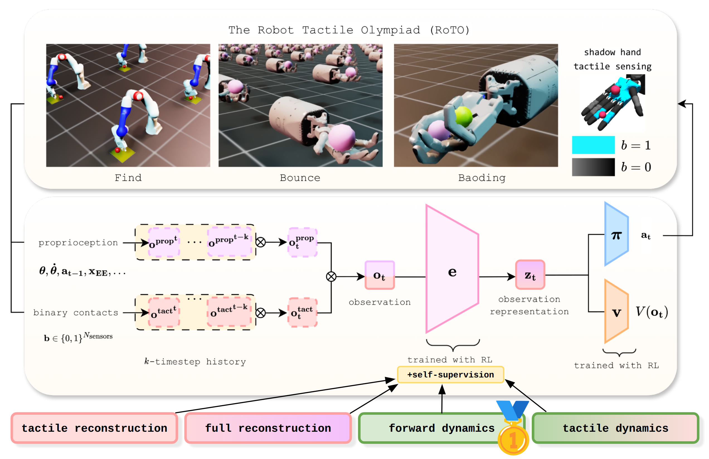

Elle Miller Trevor McInroe David Abel Oisin Mac Aodha Sethu Vijayakumar
University of Edinburgh
Accepted: NeurIPS 2025 Workshop spotlight: Humanoids 2025
Achieving safe, reliable real-world robotic manipulation requires agents to evolve beyond vision and incorporate tactile sensing to overcome sensory deficits and reliance on idealised state information. Despite its potential, the efficacy of tactile sensing in reinforcement learning (RL) remains inconsistent.
We address this by developing self-supervised learning (SSL) methodologies to more effectively harness tactile observations, focusing on a scalable setup of proprioception and sparse binary contacts. We empirically demonstrate that sparse binary tactile signals are critical for dexterity, particularly for interactions that proprioceptive control errors do not register, such as decoupled robot-object motions.
Our agents achieve superhuman dexterity in complex contact tasks (ball bouncing and Baoding ball rotation). Furthermore, we find that decoupling the SSL memory from the onpolicy memory can improve performance. We release the Robot Tactile Olympiad (RoTO) benchmark to standardise and promote future research in tactile-based manipulation.

Figure 1: Method overview. By jointly training the observation encoder with self-supervision, the agent recieves an additional signal to help transform complex sensory input into a representation useful for control. We propose and analyse 4 SSL objectives, and find multi-step forward dynamics in the latent space to be most effective for our tactile-based agents, successfully encoding object positions and velocities.
The agent's observation encoder is trained only with RL losses. Across 5 seeds, the mean and maximum performance was 5 and 13 rotations. Slowing down to 0.25x speed, it becomes more apparent that the motion is clumsy, with the balls constantly colliding.
The agent's observation encoder is jointly trained with RL losses and a self-supervised dynamics loss. Across 5 seeds, the mean and maximum performance was 17 and 25 rotations. Using marginal mutual information analysis, we found the learned representation encoded the xyz ball positions. Slowing down to 0.25x speed, the agent flawlessly manipulates the balls (except for a small mishap at 00:08), and they never collide.
The agent's observation encoder is trained only with RL losses. Across 5 seeds, the mean and maximum performance was 69 and 77 bounces. The agent plays it safe, keeping the ball secure between the index and pinky finger.
The agent's observation encoder is jointly trained with RL losses and a self-supervised dynamics loss. Across 5 seeds, the mean and maximum performance was 79 and 88 bounces. Compared to the baseline, this agent utilises its full body to control the ball. Using marginal mutual information analysis, we found the learned representation encoded the ball x,z position and vertical velocity.
The agent's observation encoder is trained only with RL losses. Across 5 seeds, the mean and maximum performance was 1.9 and 1.7 seconds to find the object. The agent learns a tilting motion to increase the probability of collision, since it relies moreso on proprioceptive control errors for locating the object. However, even after finding the object, the agent struggles to stay there.
The agent's observation encoder is jointly trained with RL losses and a self-supervised dynamics loss. Across 5 seeds, the mean and maximum performance was 1.4 and 1.2 seconds to find the object. The agent appears to use its tactile sensing more effectively to localise the object, and once found, can reliably maintain contact.
The official Guinness World Record for ball bouncing with one hand is 353 bounces in 60 seconds (59 bounces in 10 seconds).
This human expert achieves 13 rotations in 10 seconds.
@inproceedings{miller2025tactilerl,
author = {Miller, Elle and McInroe, Trevor and Abel, David and Mac Aodha, Oisin and Vijayakumar, Sethu},
title = {Enhancing Tactile-based Reinforcement Learning for Robotic Control},
journal = {NeurIPS},
year = {2025},
}Visitors around the world